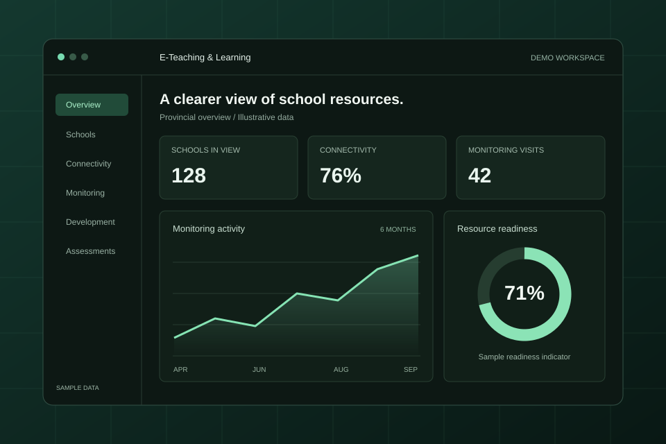

01 / Education analytics
E-Teaching &
Learning Dashboard.
A clearer picture of school ICT resources, connectivity, and monitoring — with the right view for head office and each district.
- My role
- Dashboard & application development
- Built with
- React · TypeScript · Django · PostgreSQL
- Project status
- Private · Local review build

The problem
School resource and monitoring information can be difficult to follow when it lives across separate workbooks. A useful dashboard needs to connect those records, make gaps visible, and let teams find the information relevant to their district.
What I built
A React and TypeScript interface backed by a Django API and PostgreSQL, bringing school profiles and related records into a shared reporting environment.
- School search and profiles with project membership, connectivity, and resource information.
- Views for professional development, monitoring visits, needs assessments, and readiness checklists.
- Head-office and district access, with district restrictions applied by the backend to records, statistics, and exports.
- A follow-up view for schools with recorded projects but no monitoring visit in the selected period.
Making the data trustworthy
The application keeps monitoring, training, needs, and readiness records distinct. Imports use stable source identities, and records that cannot be safely matched stay available for reconciliation.
That distinction matters: a project recorded against a school is not, by itself, proof of delivery or use. The interface and reporting rules reflect what the available data can actually support.
Where it stands
This is a local review build using imported workbook snapshots. It has not been deployed to departmental servers and does not currently synchronise live with Google sources.
Further work includes source-data reconciliation and confirmation of assessment scoring rules before extending the reporting.